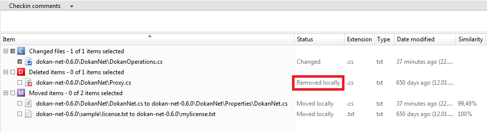

What happens when you delete a file?
We are going to delete ‘dokan-net-0.6.0\DokanNet\Proxy.cs’ file. Open a Windows Explorer and delete the file. The “Pending Changes” will look like the following:

Figure 1: Removed a file
Please, look the status column: “Removed locally” so that means the controlled file has been deleted in the workspace outside Plastic SCM (as we have done).